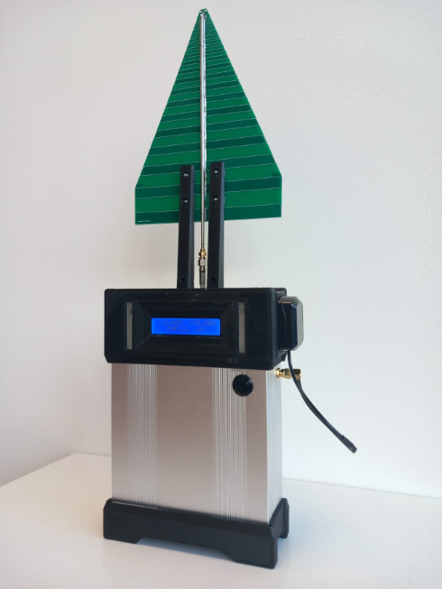
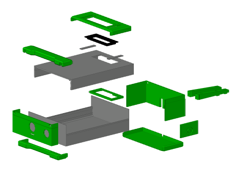
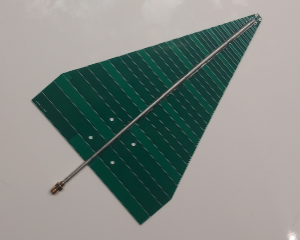
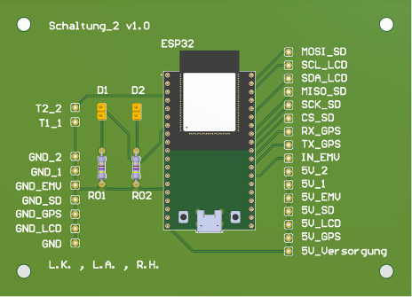
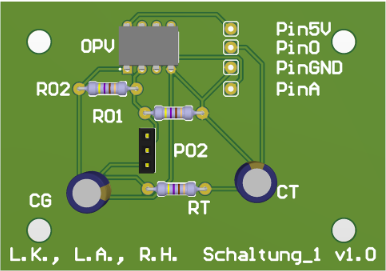
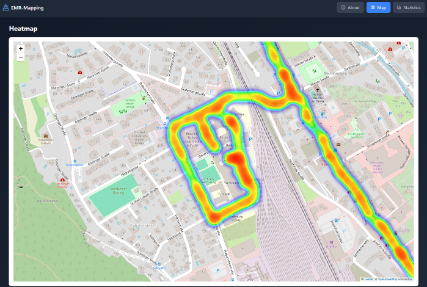
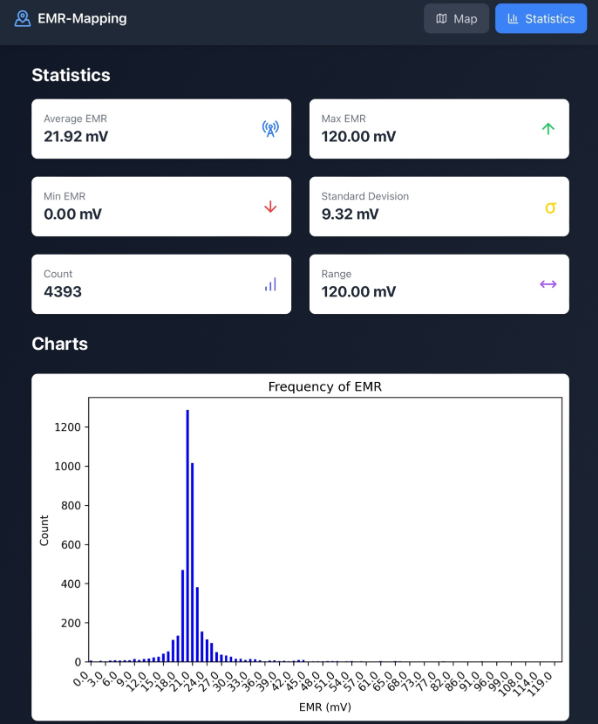

EMR-Mapping
Development of a mobile measurement device for capturing and GPS-mapped tracking of environmental EMR, paired with a scientific literature review on potential health impacts.

Motivation & Concept
Electromagnetic radiation (EMR) is omnipresent and continues to rise with technological advancements. To provide empirical data and address public health concerns, this project integrates a portable hardware measurement unit with dynamic GPS mapping and an extensive literature study evaluating RF-EMF health research.
Hardware Architecture
The hardware system captures RF signals using a wideband log-periodic antenna covering 800 MHz to 6 GHz. The incoming signal is processed through a two-stage analog conditioning block featuring a non-inverting operational amplifier circuit (LM358) to bring voltages into the target range of 0 V to 3.3 V. An intrinsic curve/envelope detector smooths the signal alongside a low-pass filter (RT = 120 mΩ, CT = 220 pF). A 10 MΩ pull-down resistor was implemented to stabilize high-impedance antenna interactions.
Enclosure Design
The housing combines aluminum shielding, to prevent internal hardware noise from interfering with measurement sensitivity and 13 modular 3D-printed PLA components. Key structural elements include reinforced external mounts for both the main log-periodic antenna and the GPS module, an integrated status display, control buttons, and LED diffusers.
Firmware & Software Infrastructure
The ESP32 firmware (C/C++) manages real-time sampling, GPS coordinate extraction via TinyGPS++, and user interface outputs driven by LiquidCrystal_I2C.
Data logging writes synchronized location and EMR telemetry to an SD card using SdFat.
A secondary Python pipeline processes recorded datasets. Using Pandas for data cleaning and Folium for geospatial rendering, it generates interactive heatmaps alongside Matplotlib statistical evaluations (mean, max, boxplots), compiling everything into an offline-ready HTML report.
Measured Performance Metrics
Key system parameters and empirical measurements derived during hardware verification:
- Frequency Coverage: 800 MHz – 6 GHz
- Analog Input Range: 0 mV – 120 mV
- Op-Amp Output Scale: 0 V – 3.3 V
- Sampling Rate: 1 Hz
- Battery Operation: around 3 hours (5V Powerbank driven)
Lessons Learned & Engineering Solutions
Through this project, key practical experience was gained in properly selecting and dimensioning electronic components. Furthermore, the scientific research revealed that the measured high-frequency electromagnetic radiation in everyday environments remains well below regulatory safety thresholds, making its health impact unproblematic.
On the technical side, high-impedance antenna interactions initially caused signal instability, which was successfully resolved by implementing a dedicated 10 MΩ pull-down resistor. However, the hardware setup presented an unavoidable limitation: due to the limited gain-bandwidth product of the LM358 operational amplifier, higher frequencies naturally experienced severe signal attenuation, an inherent characteristic of the chosen OPV that remained present in the final hardware.
Gallery





